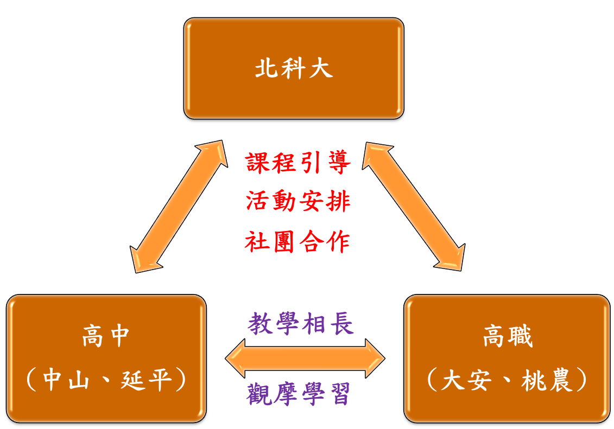

私立延平高級中學於民國35年4月創校，為一完全中學，高中部有30班，學生人數約1500人；國中部有27班，學生人數約1200人；全校共57班，學生人數共約2700人。學校的辦學理念是「要給這混亂、昏昧的社會提供一線光明，要當荒野暗夜中的螢光。」學校依據校務發展計畫及資訊教育發展計畫，成立資訊教育推動小組，推動內容包含：教學課程、教材教法、教學評量、行政電腦化、電腦教室管理、電腦課程規劃、教師分課、開列課程用書、教室場地分配、資訊教育研習、本校校務發展計畫、本校資訊教育近程中程長程發展計劃。學校共有三間電腦教室，國高中部混合排課共用。為落實資訊教育課程，每學期排入資訊相關課程，如offiec應用課程(國一上)、Dreamweaver網頁製作課程(國一下)、PhotoImpact影像編輯課程(國二上)、Flash動畫製作課程(國二下)、VB程式語言課程(國三)、C#程式語言課程(高一)，從而建立資訊教學優異的學校特色。
學校有計劃的培訓有志於C/C++程式設計的學生，成立國中部、高中部程式設計社團，利用聯課活動時間、課餘時間、暑假期間培訓，因而在各項資訊競賽中皆有優異之表現。每學期辦理班級網頁競賽、程式設計競賽，引導學生強化製作網頁之能力、及利用程式解決問題的能力，進而指導學生參加校際之各項資訊競賽。近年來在資訊領域相關競賽的表現成果不俗，例如在臺北市105學年度高級中學資訊學科能力競賽各有兩位同學獲得一等獎與入選獎；在全國105學年度高級中學資訊學科能力競賽中有一位同學獲得三等獎；有一位入選2015年國際資訊奧林匹亞競賽選訓營第二階段選訓，並獲選訓工作委員會推薦入大學校院各本學系資格。
學校對手機App及機器人等類似的專題實務應用課程，因教學環境設備及師資人力不足等因素，未能排入學期課程中，也未成立有類似的社團，但有興趣於此的學生應不在少數，藉由此計畫的實施，能讓學生有參與學習的機會，俾汲取實務應用之經驗。而計畫所規劃以社團的方式進行推動高中職資訊科學教育的方式，可協助輔導學校學生成立類似的社團，並在指導老師的帶領下，引領學生進行專案開發及程式設計演練，一步一腳印的扎根。學校在計畫的執行方面將由圖書館陳啟聰主任統籌辦理，包含的工作如下：
- 計畫期間將鼓勵學校師生參與規畫之課程與活動。
- 鼓勵學生參加認識資訊產業與資訊科技發展活動，如：專題講座、企業參訪。
- 安排高一學生參加國際運算思維測驗。
- 協助輔導學生成立手機App及機器人等類似的社團。
- 輔導學生參加相關之程式競賽，如：HP CodeWars、青年程式設計邀請賽、臺北市高級中學電腦軟體設計競賽、臺北市高級中學資訊學科能力競賽、全國高級中學資訊學科能力競賽、網際網路程式設計全國大賽、國際資訊奧林匹亞競賽選訓營。
計畫所合作的高中職包括了鄰近學校(北科大)的臺北市立大安高級工業職業學校(大安高工)、臺北市立中山女子高級中學(中山女高)與私立延平高級中學(延平中學)，以及國立臺北科技大學附屬桃園農工高級中等學校(北科附工)，合作學校包含了公私立、職業與普通高中、及女校等特性。鄰近學校的高中職與北科大的距離最遠僅隔兩個捷運站(請參閱圖一)，皆可步行或搭乘捷運到達，彼此往返討論與教學施作皆相當方便。改隸合併後的北科附工，延續之前與北科大的策略聯盟合作，在學校資源能彼此共享的條件下，十分適合進行高中職資訊科學教育的推廣與扎根活動。
計畫所規劃的進行方式包含了課程教學引導與社群合作學習。在教學引導方面，北科大依據各合作高中職對於計畫的期望與需求，規劃相關課程與活動，合作高中職則協同執行並給予回饋，教學相關的活動因為是針對所有合作高中職，因此皆在北科大進行，教材內容則需合作高中職的相關老師共同參與，以符合高中職生的學習背景。其他如演講與參訪等活動，則是各合作高中職依其需求，自行訂定主題，由北科大負責在各合作高中職辦理。在社群合作學習方面，計畫將引導學生彼此自發性的合作學習，北科大的各專業研究實驗室或是資訊相關社群將協助合作高中職生在資訊領域的體驗，以學長帶領學弟的方式進行學習與社群交流，請參閱圖二。此外，各合作高中職也可藉此計畫相互交流與觀摩彼此的資訊教學情形，高職生的實作經驗較為豐富，可適時分享給高中生；高中生則可以協助高職生在學科測驗的準備，讓合作高中職的學生得以教學相長，互得其利。

整體計畫所安排的內容如圖所示，主要是推廣資訊科學教育的活動，包含了開授程式設計課程、舉辦暑期資訊科學營隊、辦理相關演講與企業參訪、安排學生實際參與專題製作、以及輔導學生參加資訊競賽與資訊能力檢測，每樣活動所考慮的對象因性質不同而有所不同。在此計畫中，對資訊科學有所專精之學生我們歸類為「菁英」；對資訊科學有興趣但尚未有專業之訓練之學生，我們稱為「中堅」；其他的學生則為「普羅」。在課程方面，主要是針對菁英或部分對資訊科學極有興趣之學生實施；資訊科學營隊的舉辦則是要讓學生對資訊科學有進一步的認識與學習，增加學生的興趣，主要對象放在中堅學生或部分普羅學生；輔導學生參加資訊競賽與資訊能力檢測，因為牽涉層面較廣，對於菁英或中堅的學生，計畫將輔導其參加競賽與專題之開發，而普羅學生亦可藉由輔導增加資訊學科程度，提高運算思維能力；演講與企業參訪則是可以對所有學生來辦理，甚至於老師亦可加入活動，主要是以普及資訊科學應用為主。
為使規劃的相關活動得以順利推展，北科大與合作高中職將密切合作，整體組織架構如圖四，北科大接受教育部「資通訊軟體創新人才推升計畫」之菁英扎根推廣分項推動中心指導，規劃並推動菁英扎根相關活動，合作高中職將配合實施並給予回饋，提升資訊科學教育推廣效果。同時，北科大亦將扮演協調角色，讓合作高中職能彼此充分交流與觀摩資訊教學情形。北科大部分除了計畫主持人與共同主持人負責整體規劃、協調、與執行之外，將設置四個小組分別負責計畫預定推廣的事項：
- 課程小組：
由共同主持人王正豪教授負責統籌規畫開設資訊科學相關課程事宜，包含了課程主題及內容訂定、課程教材的製作整理、課程的實施方式、以及授課進度協調等。
- 輔導小組：
主要任務在於輔導學生參加資訊科學測驗與競賽，以及協助學生解決在課程學習當中所遇到的問題，並將參與課程教材製作，適時將競賽或測驗演練題目或主題融入課程之中，此部分委請國立臺北科技大學資訊工程系郭忠義教授負責。
- 活動小組：
計畫所規劃的演講、參訪、以及營隊等活動，主要目的在於推動學生認識資訊產業與資訊科技發展，活動小組即是針對此一推廣事項進行進一步規劃，包含了主題選定、參訪廠商推薦、活動進行方式與流程等，將委請國立臺北科技大學資訊工程系謝東儒教授統籌辦理。
- 社群小組：
本計畫所規劃的推廣方式，除了上述的課程、輔導與活動外，另一個重點是以社群的方式進行推動，北科大的教授專業實驗室或是資訊相關社群可協助合作高中職生對於資訊相關專業領域的認識與學習。學生的年齡差距小，相互學習較無壓力，較易增加學習效果與興趣，亦可深化資訊科學教育。這部分將委由對資訊相關社群發展相當關心的國立臺北科技大學資訊工程系劉建宏教授協助。